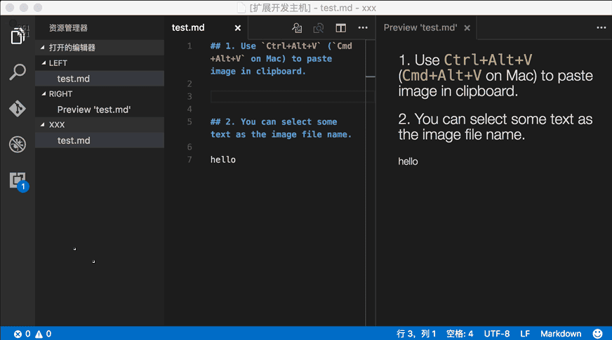

[글쓰기] VS Code로 글쓰기 환경 최적화(feat. 마크다운)
네이버 블로그, 브런치 같이 이미지를 쉽게 붙여넣자

블로그, 유튜브, 인스타, 브런치 등등.
그 어떤 개인 매체를 불문하고 컨테츠 크레에이터가 직면하게 되는 문제가 <꾸준함>이다. 꾸준한 생산은 성공한 많은 크레에이터들이 꼽고 있는 중요한 성공 요인이다.
컨텐츠를 꾸준히 생산하기 위해서는 소재가 고갈되지 않고 꾸준히 나와야 하겠지만, 생산 툴이 최적화되어 있는 것도 필요하다. 모두가 좋은 목수가 아닌 이상 좋은 연장을 마련해야 좋은 결과물도 나올 수 있는 것이다. 특히, 무엇이 좋은 컨텐츠인지 예상하기가 쉽지 않은 상황에서는 컨텐츠를 대량으로 생산하는 것이 좋은 결과물을 내는 중요하는 방법일 수 있다.
서론이 길었다
정적 웹페이지로 블로그를 운용하면서 직면하게 되는 가장 큰 문제점은 비슷한 문자 컨텐츠를 생산하고 공유하는 기성 블로그 서비스(워드프레스, 네이버 블로그, 티스토리 등)나 브런치 등에 비해서 글쓰기가 쉽지 않다는 점이다. 기본적으로 마크다운으로 글을 만들어야 하다보니, PC에서 작업해야 하는 경우가 많다. 로컬에서 작업하고 git으로 push하는 것이 번거로울 경우나 모바일로 글 작성이 필요할 때는 forestry.io와 같은 서비스를 이용할 수 있다.
문제는 글쓰기를 본격적으로 하는 곳은 로컬 PC인데, 마크다운으로 글을 쓴다고 하더라도 컨텐츠에 필수적으로 담겨야할 이미지를 처리하는 것이 번거롭다는 것이다. 요즘과 같은 (동)영상시대에 이미지가 없는 글은 죽은 글이나 마찬가지이다. 그런데, 마크다운으로 글을 쓰는 것은 이미지 복/붙이 매우 자유로운 네이버 블로그나 브런치에 비해서 이미지 삽입이 매우 제약적인 한계가 있다.
여전히 서론이 길다
로컬에서 마크다운을 사용하는 방법 중 하나가 Vs code를 이용하는 것이다. 특히, 여러 능력자들이 만든 extensions들을 활용하면 글쓰기의 다양한 삽질을 자동화할 수 있다.
대표적인 방법이 클립보드에 있는 이미지를 마크다운 문서에 삽입하면 이미지가 글이 있는 폴더에 바로 복사되고, 그 경로를 가르키는 이미지 주소가 생성되어 글 본문에 삽입되도록 하는 것이다.
아래 데모 영상을 참고해 보자. 캡쳐한 이미지를 본문에 바로 삽입하고, 링크까지 자동완성한다.

여기에서 두가지를 더 추가할 수 있는데, 하나는 imgur와 같이 온라인 이미지 저장 서비스를 이용해서 웹사이트의 부하를 줄여주는 것이고, 다른 하나는 클립보드로 입력되는 이미지 파일을 웹에 최적화시켜서 파일 사이즈를 줄이는 것이다.
가장 많이 쓰는 코딩툴인 vscode 기준으로 아래 extension들을 이용하면 되고, vscode와 비슷하게 생태계가 잘 갖춰줘 있는 sublime text도 유사하게 세팅이 가능하다.
가장 기본적인 세팅으로 이미지 붙여넣기(오프라인) 방식을 먼저 해보고, 나머지를 시도해 보면 좋다. 아래 링크에서 바로 설치가 가능하다. 그 다음 imgur를 이용하는 이미지 붙여넣기(온라인) 방식을 시도해 보는 것을 추천한다. imgur API에 접근하는 세팅을 해야하는 것이 필요하다.
그 다음엔 아미지 최적화 자동화를 해볼 수 있다.
아래 링크에 설명이 있으니 보고 따라하면 된다. 물론 하다가 벽에 부딪히는 경우가 생기기도 하는데, 필요하다면, 개별 extensions 설치 및 사용 방법에 대해서도 포스팅해봐야겠다.
-
이미지 붙여넣기(오프라인) - Paste Image
https://marketplace.visualstudio.com/items?itemName=mushan.vscode-paste-image -
이미지 붙여넣기(온라인) - vscode-imgur
https://marketplace.visualstudio.com/items?itemName=MaxfieldWalker.vscode-imgur -
이미지 최적화 자동화
https://marketplace.visualstudio.com/items?itemName=fabiospampinato.vscode-optimize-images -
단축키 설정(설정->키보드 단축키)
오프라인 : 알트+v
온라인 : 컨트롤+알트+v
이미지 최적화 : 컨트롤+알트+o
더 자세한 설명이 필요하면, 댓글로 필요한 부분을 요청해 주세요. 더 좋은 방법이 있다면, 댓글로 알려주시면 감사히 배우겠습니다.
)